Amazing Spider-Man (1962 - 1998)
| Comic Book | Release Date | Cover |
|---|---|---|
| Amazing Spider-Man #-1 Where Have All the Heroes Gone | 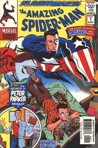 | |
| Amazing Spider-Man #1 Spider-Man |  | |
| Amazing Spider-Man #2 Duel to the Death with the Vulture! | 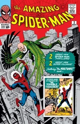 | |
| Amazing Spider-Man #3 Spider-Man Versus Doctor Octopus | 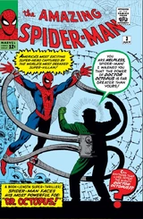 | |
| Amazing Spider-Man #4 Nothing Can Stop... the Sandman! | 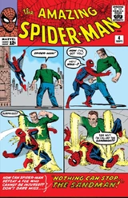 | |
| Amazing Spider-Man #5 Marked for Destruction by Dr. Doom! | 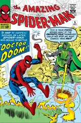 | |
| Amazing Spider-Man #6 Face-to-Face with... the Lizard! | 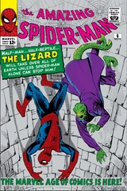 | |
| Amazing Spider-Man #7 The Return of the Vulture | 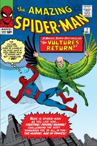 | |
| Amazing Spider-Man #8 The Terrible Threat of the Living Brain! | 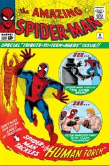 | |
| Amazing Spider-Man #9 The Man Called Electro! | 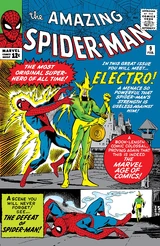 | |
| Amazing Spider-Man #10 The Enforcers! | 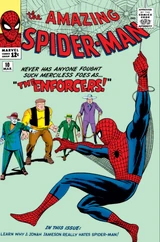 | |
| Amazing Spider-Man #11 Turning Point | 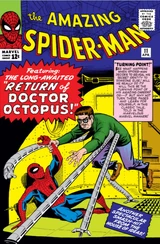 | |
| Amazing Spider-Man #12 Unmasked By Doctor Octopus! | 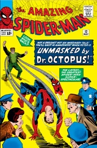 | |
| Amazing Spider-Man #13 The Menace of... Mysterio! | 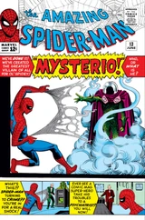 | |
| Amazing Spider-Man #14 The Grotesque Adventure of the Green Goblin | 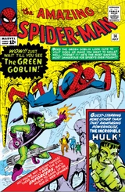 | |
| Amazing Spider-Man #15 Kraven the Hunter! | 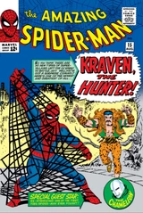 | |
| Amazing Spider-Man #16 Duel with Daredevil | 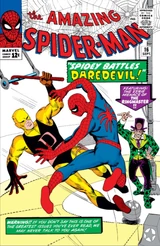 | |
| Amazing Spider-Man #17 The Return of the Green Goblin! | 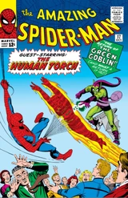 | |
| Amazing Spider-Man #18 The End of Spider-Man! | 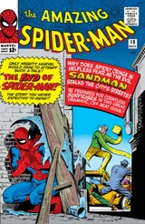 | |
| Amazing Spider-Man #19 Spidey Strikes Back! | 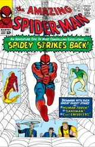 | |
| Amazing Spider-Man #20 The Coming of the Scorpion! OR: Spidey Battles Scorpey! | 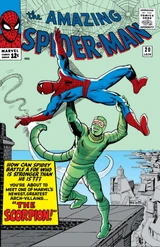 | |
| Amazing Spider-Man #21 Where Flies the Beetle...! | 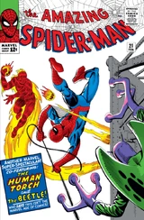 | |
| Amazing Spider-Man #22 Preeeeeesenting...the Clown, and his Masters of Menace! | 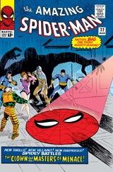 | |
| Amazing Spider-Man #23 The Goblin and the Gangsters | 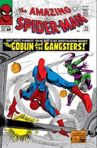 | |
| Amazing Spider-Man #24 Spider-Man Goes Mad! | 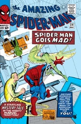 | |
| Amazing Spider-Man #25 Captured By J.Jonah Jameson! | 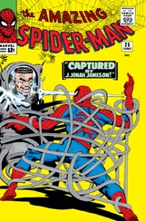 | |
| Amazing Spider-Man #26 The Man in the Crime-Master's Mask! | 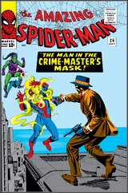 | |
| Amazing Spider-Man #27 Bring Back My Goblin to Me! | 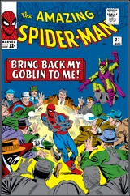 | |
| Amazing Spider-Man #28 The Menace of the Molten Man! | 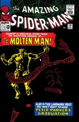 | |
| Amazing Spider-Man #29 Never Step on a Scorpion! or You Think It's Easy to Dream Up Titles Like This? | 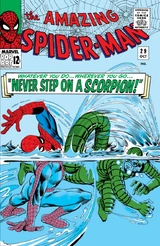 | |
| Amazing Spider-Man #30 The Claws of the Cat! | 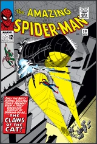 | |
| Amazing Spider-Man #31 If This Be My Destiny...! | 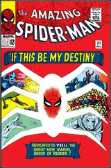 | |
| Amazing Spider-Man #32 Man on a Rampage! | 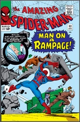 | |
| Amazing Spider-Man #33 The Final Chapter! | 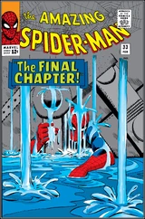 | |
| Amazing Spider-Man #34 The Thrill of the Hunt! | 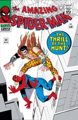 | |
| Amazing Spider-Man #35 The Molten Man Regrets...! | 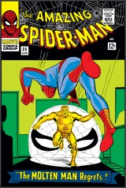 | |
| Amazing Spider-Man #36 When Falls the Meteor! | 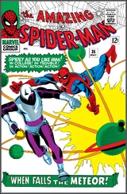 | |
| Amazing Spider-Man #37 Once Upon A Time, There Was A Robot...! | 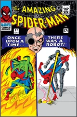 | |
| Amazing Spider-Man #38 Just A Guy Named Joe! | 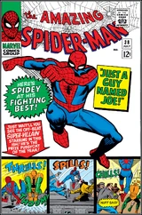 | |
| Amazing Spider-Man #39 How Green Was My Goblin! | 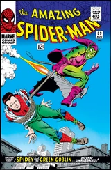 | |
| Amazing Spider-Man #40 Spidey Saves the Day! Featuring: The End of the Green Goblin! | 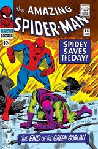 | |
| Amazing Spider-Man #41 The Horns of the Rhino! | 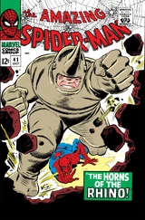 | |
| Amazing Spider-Man #42 The Birth of a Super-Hero! | 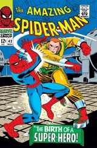 | |
| Amazing Spider-Man #43 Rhino on the Rampage! | 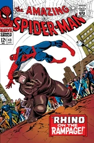 | |
| Amazing Spider-Man #44 Where Crawls the Lizard! | 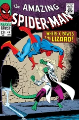 | |
| Amazing Spider-Man #45 Spidey Smashes Out! | 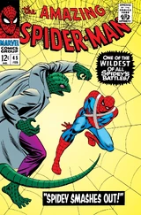 | |
| Amazing Spider-Man #46 The Sinister Shocker! | 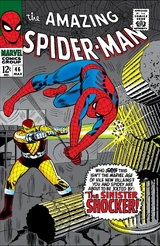 | |
| Amazing Spider-Man #47 In the Hands of the Hunter! | 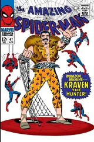 | |
| Amazing Spider-Man #48 The Wings of the Vulture! | 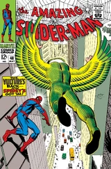 | |
| Amazing Spider-Man #49 From the Depths of Defeat! | 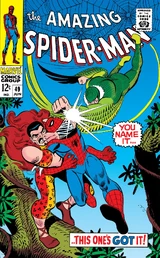 | |
| Amazing Spider-Man #50 Spider-Man No More! | 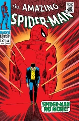 | |
| Amazing Spider-Man #51 In the Clutches of the Kingpin! | ||
| Amazing Spider-Man #52 To Die a Hero! | ||
| Amazing Spider-Man #53 Enter: Dr. Octopus | ||
| Amazing Spider-Man #54 The Tentacles and the Trap! | ||
| Amazing Spider-Man #55 Doc Ock Wins! | ||
| Amazing Spider-Man #56 Disaster! | ||
| Amazing Spider-Man #57 The Coming of Ka-zar! | ||
| Amazing Spider-Man #58 To Kill A Spider-Man! | ||
| Amazing Spider-Man #59 The Brand of the Brainwasher! | ||
| Amazing Spider-Man #60 O, Bitter Victory! | ||
| Amazing Spider-Man #61 What a Tangled Web We Weave...! | ||
| Amazing Spider-Man #62 Make Way for... Medusa! | ||
| Amazing Spider-Man #63 Wings in the Night! | ||
| Amazing Spider-Man #64 The Vulture's Prey | ||
| Amazing Spider-Man #65 The Impossible Escape! | ||
| Amazing Spider-Man #66 The Madness Of Mysterio! | ||
| Amazing Spider-Man #67 To Squash A Spider! | ||
| Amazing Spider-Man #68 Crisis on the Campus! | ||
| Amazing Spider-Man #69 Mission: Crush The Kingpin! | ||
| Amazing Spider-Man #70 Spider-Man Wanted! | ||
| Amazing Spider-Man #71 The Speedster and The Spider | ||
| Amazing Spider-Man #72 Rocked by..the Shocker! | ||
| Amazing Spider-Man #73 The Web Closes! | ||
| Amazing Spider-Man #74 If This Be Bedlam! | ||
| Amazing Spider-Man #75 Death Without Warning! | ||
| Amazing Spider-Man #76 The Lizard Lives! | ||
| Amazing Spider-Man #77 In the Blaze of Battle! | ||
| Amazing Spider-Man #78 The Night of The Prowler! | ||
| Amazing Spider-Man #79 To Prowl No More! | ||
| Amazing Spider-Man #80 On the Trail of the Chameleon! | ||
| Amazing Spider-Man #81 The Coming of the Kangaroo! | ||
| Amazing Spider-Man #82 And then came Electro! | ||
| Amazing Spider-Man #83 The Schemer! | ||
| Amazing Spider-Man #84 The Kingpin Strikes Back! | ||
| Amazing Spider-Man #85 And now...the Secret of the Schemer! | ||
| Amazing Spider-Man #86 Beware...The Black Widow! | ||
| Amazing Spider-Man #87 Unmasked At Last! | ||
| Amazing Spider-Man #88 The Arms of Doctor Octopus! | ||
| Amazing Spider-Man #89 Doc Ock Lives! | ||
| Amazing Spider-Man #90 And Death Shall Come! | ||
| Amazing Spider-Man #91 To Smash the Spider! | ||
| Amazing Spider-Man #92 When Iceman Attacks! | ||
| Amazing Spider-Man #93 The Lady and --- the Prowler! | ||
| Amazing Spider-Man #94 On Wings of Death! | ||
| Amazing Spider-Man #95 Trap for a Terrorist! | ||
| Amazing Spider-Man #96 ...And Now, The Goblin! | ||
| Amazing Spider-Man #97 In the Grip of the Goblin! | ||
| Amazing Spider-Man #98 The Goblin's Last Gasp! | ||
| Amazing Spider-Man #99 A Day in the Life Of --- | ||
| Amazing Spider-Man #100 The Spider or the Man? | ||
| Amazing Spider-Man #101 A Monster Called Morbius! | ||
| Amazing Spider-Man #102 Vampire at Large! | ||
| Amazing Spider-Man #103 Walk The Savage Land! | ||
| Amazing Spider-Man #104 The Beauty And The Brute | ||
| Amazing Spider-Man #105 The Spider Slayer! | ||
| Amazing Spider-Man #106 Squash Goes the Spider! | ||
| Amazing Spider-Man #107 Spidey Smashes Thru! | ||
| Amazing Spider-Man #108 Vengeance from Vietnam! | ||
| Amazing Spider-Man #109 Enter Dr. Strange! | ||
| Amazing Spider-Man #110 The Birth of...the Gibbon! | ||
| Amazing Spider-Man #111 To Stalk A Spider! | ||
| Amazing Spider-Man #112 Spidey Cops Out! | ||
| Amazing Spider-Man #113 They Call the Doctor... Octopus! | ||
| Amazing Spider-Man #114 Gang War, Schmang War! What I Want to know is ...who the Heck is Hammerhead? | ||
| Amazing Spider-Man #115 The Last Battle! | ||
| Amazing Spider-Man #116 Suddenly...The Smasher! | ||
| Amazing Spider-Man #117 The Deadly Designs of the Disruptor! | ||
| Amazing Spider-Man #118 Countdown to Chaos! | ||
| Amazing Spider-Man #119 The Gentleman's Name Is... Hulk! | ||
| Amazing Spider-Man #120 The Fight and the Fury! | ||
| Amazing Spider-Man #121 The Night Gwen Stacy Died | ||
| Amazing Spider-Man #122 The Goblin's Last Stand! | ||
| Amazing Spider-Man #123 ...Just a Man Called Cage! | ||
| Amazing Spider-Man #124 The Mark of the Man-Wolf | ||
| Amazing Spider-Man #125 Wolfhunt! | ||
| Amazing Spider-Man #126 The Kangaroo Bounces Back! | ||
| Amazing Spider-Man #127 The Dark Wings Of Death! | ||
| Amazing Spider-Man #128 The Vulture Hangs High! | ||
| Amazing Spider-Man #129 The Punisher Strikes Twice! | ||
| Amazing Spider-Man #130 Betrayed! | ||
| Amazing Spider-Man #131 My Uncle... My Enemy? | ||
| Amazing Spider-Man #132 The Master Plan of the Molten Man! | ||
| Amazing Spider-Man #133 The Molten Man Breaks Out! | ||
| Amazing Spider-Man #134 Danger is a Man Named... Tarantula | ||
| Amazing Spider-Man #135 Shoot-Out in Central Park! | ||
| Amazing Spider-Man #136 The Green Goblin Lives Again! | ||
| Amazing Spider-Man #137 The Green Goblin Strikes! | ||
| Amazing Spider-Man #138 Madness Means...The Mindworm! | ||
| Amazing Spider-Man #139 Day of the Grizzly! | ||
| Amazing Spider-Man #140 ...And One Will Fall! | ||
| Amazing Spider-Man #141 The Man's Name Appears To Be...Mysterio! | ||
| Amazing Spider-Man #142 Dead Man's Bluff! | ||
| Amazing Spider-Man #143 ...And The Wind Cries: Cyclone! | ||
| Amazing Spider-Man #144 The Delusion Conspiracy | ||
| Amazing Spider-Man #145 Gwen Stacy is alive...and, well...?! | ||
| Amazing Spider-Man #146 Scorpion......Where is thy Sting? | ||
| Amazing Spider-Man #147 The Tarantula is a Very Deadly Beast! | ||
| Amazing Spider-Man #148 Jackal, Jackal... Who's Got the Jackal? | ||
| Amazing Spider-Man #149 Even If I Live, I Die! | ||
| Amazing Spider-Man #150 Spider-Man.... Or Spider-Clone? | ||
| Amazing Spider-Man #151 Skirmish Beneath the Streets! | ||
| Amazing Spider-Man #152 Shattered by the Shocker! | ||
| Amazing Spider-Man #153 The Longest Hundred Yards! | ||
| Amazing Spider-Man #154 The Sandman Always Strikes Twice | ||
| Amazing Spider-Man #155 Whodunit! | ||
| Amazing Spider-Man #156 On a Clear Day You Can See the Mirage! | ||
| Amazing Spider-Man #157 The Ghost That Haunted Octopus! | ||
| Amazing Spider-Man #158 Hammerhead Is Out! | ||
| Amazing Spider-Man #159 Arm-In-Arm-In-Arm-In-Arm-In-Arm-In-Arm with Doctor Octopus | ||
| Amazing Spider-Man #160 My Killer, The Car! | ||
| Amazing Spider-Man #161 ...And the Nightcrawler Came Prowling, Prowling | ||
| Amazing Spider-Man #162 Let the Punisher fit the Crime | ||
| Amazing Spider-Man #163 All The Kingpin's Men | ||
| Amazing Spider-Man #164 Deadline! | ||
| Amazing Spider-Man #165 Stegron Stalks the City! | ||
| Amazing Spider-Man #166 War of The Reptile-Men! | ||
| Amazing Spider-Man #167 ...Stalked By The Spider-Slayer! | ||
| Amazing Spider-Man #168 Murder On the Wind! | ||
| Amazing Spider-Man #169 Confrontation | ||
| Amazing Spider-Man #170 Madness Is All in the Mind! | ||
| Amazing Spider-Man #171 Photon Is Another Name For...? | ||
| Amazing Spider-Man #172 The Fiend from the Fire! | ||
| Amazing Spider-Man #173 If You Can't Stand the Heat...! | ||
| Amazing Spider-Man #174 The Hitman's Back in Town! | ||
| Amazing Spider-Man #175 Big Apple Battleground! | ||
| Amazing Spider-Man #176 He Who Laughs Last...! | ||
| Amazing Spider-Man #177 Goblin in the Middle | ||
| Amazing Spider-Man #178 Green Grows the Goblin! | ||
| Amazing Spider-Man #179 The Goblin's Always Greener...! | ||
| Amazing Spider-Man #180 Who Was That Goblin I Saw You With? | ||
| Amazing Spider-Man #181 Flashback! | ||
| Amazing Spider-Man #182 The Rocket Racer's Back in Town! | ||
| Amazing Spider-Man #183 ...And Where the Big Wheel Stops, Nobody Knows! | ||
| Amazing Spider-Man #184 White Dragon! Red Death! | ||
| Amazing Spider-Man #185 Spider, Spider, Burning Bright! | ||
| Amazing Spider-Man #186 Chaos Is -- the Chameleon! | ||
| Amazing Spider-Man #187 The Power of Electro! | ||
| Amazing Spider-Man #188 The Jigsaw is up! | ||
| Amazing Spider-Man #189 Mayhem by Moonlight! | ||
| Amazing Spider-Man #190 In Search of the Man-Wolf | ||
| Amazing Spider-Man #191 Wanted for Murder: Spider-Man | ||
| Amazing Spider-Man #192 24 Hours till Doomsday! | ||
| Amazing Spider-Man #193 The Wings of the Fearsome Fly! | ||
| Amazing Spider-Man #194 Never Let the Black Cat Cross Your Path! | ||
| Amazing Spider-Man #195 Nine Lives Has the Black Cat! | ||
| Amazing Spider-Man #196 Requiem! | ||
| Amazing Spider-Man #197 The Kingpin's Midnight Massacre! | ||
| Amazing Spider-Man #198 Mysterio is Deadlier by the Dozen! | ||
| Amazing Spider-Man #199 Now You See Me! Now You Die! | ||
| Amazing Spider-Man #200 The Spider and The Burglar...A Sequel | ||
| Amazing Spider-Man #201 Man-Hunt! | ||
| Amazing Spider-Man #202 One For Those Long Gone! | ||
| Amazing Spider-Man #203 Bewitched, Bothered and Be-Dazzled! | ||
| Amazing Spider-Man #204 The Black Cat Always Lands On Her Feet! | ||
| Amazing Spider-Man #205 ...In Love and War! | ||
| Amazing Spider-Man #206 A Method in His Madness! | ||
| Amazing Spider-Man #207 Mesmero's Revenge! | ||
| Amazing Spider-Man #208 Fusion! | ||
| Amazing Spider-Man #209 To Salvage my Honor! | ||
| Amazing Spider-Man #210 The prophecy of Madame Web! | ||
| Amazing Spider-Man #211 The Spider and the Sea-Scourge! | ||
| Amazing Spider-Man #212 The Coming of Hydroman! | ||
| Amazing Spider-Man #213 All they want to do is kill you, Spider-Man... | ||
| Amazing Spider-Man #214 Then Shall We Both Be Betrayed! | ||
| Amazing Spider-Man #215 By My Powers Shall I Be Vanquished! | ||
| Amazing Spider-Man #216 Marathon | ||
| Amazing Spider-Man #217 Here's Mud in Your Eye! | ||
| Amazing Spider-Man #218 Eye of the Beholder! | ||
| Amazing Spider-Man #219 Peter Parker -- Criminal! | ||
| Amazing Spider-Man #220 A Coffin for Spider-Man! | ||
| Amazing Spider-Man #221 Blues for Lonesome Pinky! | ||
| Amazing Spider-Man #222 Faster than the eye! | ||
| Amazing Spider-Man #223 Night of the Ape! | ||
| Amazing Spider-Man #224 Let Fly These Aged Wings! | ||
| Amazing Spider-Man #225 Fools...like us! | ||
| Amazing Spider-Man #226 But the Cat Came Back... | ||
| Amazing Spider-Man #227 Goin' straight! | ||
| Amazing Spider-Man #228 Murder by Spider | ||
| Amazing Spider-Man #229 Nothing Can Stop the Juggernaut! | ||
| Amazing Spider-Man #230 To Fight the Unbeatable Foe! | ||
| Amazing Spider-Man #231 Caught in the Act... | ||
| Amazing Spider-Man #232 Hyde... in Plain Sight! | ||
| Amazing Spider-Man #233 Where the @¢%# Is Nose Norton? | ||
| Amazing Spider-Man #234 Now Shall Will-O'-The-Wisp Have His Revenge! | ||
| Amazing Spider-Man #235 Look Out There's a Monster Coming! | ||
| Amazing Spider-Man #236 Death Knell! | ||
| Amazing Spider-Man #237 High & Mighty! | ||
| Amazing Spider-Man #238 Shadow of Evils Past! | ||
| Amazing Spider-Man #239 Now Strikes the Hobgoblin! | ||
| Amazing Spider-Man #240 Wings of Vengeance! | ||
| Amazing Spider-Man #241 In the Beginning... | ||
| Amazing Spider-Man #242 Confrontations! | ||
| Amazing Spider-Man #243 Options! | ||
| Amazing Spider-Man #244 Ordeals! | ||
| Amazing Spider-Man #245 Sacrifice Play! | ||
| Amazing Spider-Man #246 The Daydreamers! | ||
| Amazing Spider-Man #247 Interruptions | ||
| Amazing Spider-Man #248 And He Strikes Like a Thunderball | ||
| Amazing Spider-Man #249 Secrets! | ||
| Amazing Spider-Man #250 Confessions! | ||
| Amazing Spider-Man #251 Endings! | ||
| Amazing Spider-Man #252 Homecoming! | ||
| Amazing Spider-Man #253 By Myself Betrayed! | ||
| Amazing Spider-Man #254 With Great Power... | ||
| Amazing Spider-Man #255 Even a Ghost Can Fear the Night! | ||
| Amazing Spider-Man #256 Introducing... Puma! | ||
| Amazing Spider-Man #257 Beware the Claws of Puma! | ||
| Amazing Spider-Man #258 The Sinister Secret of Spider-Man's New Costume! | ||
| Amazing Spider-Man #259 All My Pasts Remembered! | ||
| Amazing Spider-Man #260 The Challenge of Hobgoblin! | ||
| Amazing Spider-Man #261 The Sins of my Father! | ||
| Amazing Spider-Man #262 Trade Secret | ||
| Amazing Spider-Man #263 The Spectacular Spider-Kid! | ||
| Amazing Spider-Man #264 Red 9 and Red Tape! | ||
| Amazing Spider-Man #265 After The Fox! | ||
| Amazing Spider-Man #266 Jump For My Love" or "Spring Is in the Air | ||
| Amazing Spider-Man #267 The Commuter Cometh! | ||
| Amazing Spider-Man #268 This Gold Is Mine! | ||
| Amazing Spider-Man #269 Burn, Spider, Burn! | ||
| Amazing Spider-Man #270 The Hero and the Holocaust | ||
| Amazing Spider-Man #271 Whatever Happened to Crusher Hogan? | ||
| Amazing Spider-Man #272 Make Way for Slyde! | ||
| Amazing Spider-Man #273 To Challenge The Beyonder! | ||
| Amazing Spider-Man #274 Lo, There Shall Come a Champion! | ||
| Amazing Spider-Man #275 The Choice and the Challenge! | ||
| Amazing Spider-Man #276 Unmasked! | ||
| Amazing Spider-Man #277 The Rules of the Game! | ||
| Amazing Spider-Man #278 If This Be Justice-- | ||
| Amazing Spider-Man #279 Savage Is the Sable! | ||
| Amazing Spider-Man #280 The Sinister Syndicate! | ||
| Amazing Spider-Man #281 When Warriors Clash--! | ||
| Amazing Spider-Man #282 The Fury of X-Factor! | ||
| Amazing Spider-Man #283 With Foes Like These... | ||
| Amazing Spider-Man #284 ... And Who Will Stand Against Them...? | ||
| Amazing Spider-Man #285 The Arranger Must Die! | ||
| Amazing Spider-Man #286 Thy Father's Son! | ||
| Amazing Spider-Man #287 ...And There Shall Come a Reckoning | ||
| Amazing Spider-Man #288 Gang War Rages On! | ||
| Amazing Spider-Man #289 The Hobgoblin Revealed! | ||
| Amazing Spider-Man #290 The Big Question | ||
| Amazing Spider-Man #291 Dark Journey! | ||
| Amazing Spider-Man #292 Growing Pains! | ||
| Amazing Spider-Man #293 Crawling | ||
| Amazing Spider-Man #294 Thunder | ||
| Amazing Spider-Man #295 Mad Dogs | ||
| Amazing Spider-Man #296 Force of Arms | ||
| Amazing Spider-Man #297 I'll Take Manhattan! | ||
| Amazing Spider-Man #298 Chance Encounter | ||
| Amazing Spider-Man #299 Survival of the Hittist! | ||
| Amazing Spider-Man #300 Venom | ||
| Amazing Spider-Man #301 The Sable Gauntlet! | ||
| Amazing Spider-Man #302 (Mid)American Gothic! | ||
| Amazing Spider-Man #303 Dock Savage | ||
| Amazing Spider-Man #304 California (State) Schemin'! | ||
| Amazing Spider-Man #305 Westward Woe! | ||
| Amazing Spider-Man #306 Humbugged! | ||
| Amazing Spider-Man #307 The Thief Who Stole Himself! | ||
| Amazing Spider-Man #308 Dread | ||
| Amazing Spider-Man #309 Styx And Stone | ||
| Amazing Spider-Man #310 Shrike Force! | ||
| Amazing Spider-Man #311 Mysteries Of The Dead | ||
| Amazing Spider-Man #312 The Goblin War | ||
| Amazing Spider-Man #313 Slithereens | ||
| Amazing Spider-Man #314 Down And Out In Forest Hills | ||
| Amazing Spider-Man #315 A Matter of Life and Debt | ||
| Amazing Spider-Man #316 Dead Meat | ||
| Amazing Spider-Man #317 The Sand and the Fury | ||
| Amazing Spider-Man #318 Sting Your Partner! | ||
| Amazing Spider-Man #319 The Scorpion's Tail Of Woe! | ||
| Amazing Spider-Man #320 License Invoked | ||
| Amazing Spider-Man #321 Under War! | ||
| Amazing Spider-Man #322 Ceremony | ||
| Amazing Spider-Man #323 Assault Rivals | ||
| Amazing Spider-Man #324 Twos Day | ||
| Amazing Spider-Man #325 Finale in Red! | ||
| Amazing Spider-Man #326 Gravity Storm | ||
| Amazing Spider-Man #327 Cunning Attractions! | ||
| Amazing Spider-Man #328 Shaw's Gambit | ||
| Amazing Spider-Man #329 Power Prey! | ||
| Amazing Spider-Man #330 The Powder Chase | ||
| Amazing Spider-Man #331 The Death Standard | ||
| Amazing Spider-Man #332 Sunday in the Park with Venom! | ||
| Amazing Spider-Man #333 Stalking Feat! | ||
| Amazing Spider-Man #334 Secrets, Puzzles and Little Fears... | ||
| Amazing Spider-Man #335 Shocks! | ||
| Amazing Spider-Man #336 The Wagers of Sin | ||
| Amazing Spider-Man #337 Rites and Wrongs | ||
| Amazing Spider-Man #338 Death From Above! | ||
| Amazing Spider-Man #339 The Killing Cure! | ||
| Amazing Spider-Man #340 The Hero Subtracter | ||
| Amazing Spider-Man #341 With(out) Great Power... | ||
| Amazing Spider-Man #342 The Jonah Trade | ||
| Amazing Spider-Man #343 War Garden! | ||
| Amazing Spider-Man #344 Hearts and Powers | ||
| Amazing Spider-Man #345 Gun From the Heart | ||
| Amazing Spider-Man #346 Elliptical Pursuit | ||
| Amazing Spider-Man #347 The Boneyard Hop! | ||
| Amazing Spider-Man #348 Righteous Sand | ||
| Amazing Spider-Man #349 Man of Steal! | ||
| Amazing Spider-Man #350 Doom Service! | ||
| Amazing Spider-Man #351 The Three Faces of Evil! | ||
| Amazing Spider-Man #352 Death Walk! | ||
| Amazing Spider-Man #353 When Midnight Strikes! | ||
| Amazing Spider-Man #354 Wilde at Heart! | ||
| Amazing Spider-Man #355 Total Eclipse of the Moon...Knight! | ||
| Amazing Spider-Man #356 After Midnight! | ||
| Amazing Spider-Man #357 A Bagel With Nova! | ||
| Amazing Spider-Man #358 Out On a Limb | ||
| Amazing Spider-Man #359 Toy Death! | ||
| Amazing Spider-Man #360 Death Toy! | ||
| Amazing Spider-Man #361 Carnage, Part One: Savage Genesis | ||
| Amazing Spider-Man #362 Carnage, Part Two: Savage Alliance | ||
| Amazing Spider-Man #363 Carnage, Conclusion: Savage Grace! | ||
| Amazing Spider-Man #364 The Pain of Fast Air | ||
| Amazing Spider-Man #365 Fathers and Sins | ||
| Amazing Spider-Man #366 Skullwork! | ||
| Amazing Spider-Man #367 Skullduggery | ||
| Amazing Spider-Man #368 On Razored Wings | ||
| Amazing Spider-Man #369 Electric Doom | ||
| Amazing Spider-Man #370 Life Stings! | ||
| Amazing Spider-Man #371 One Clue Over The Cuckoo's Nest | ||
| Amazing Spider-Man #372 Arachnophobia Too! | ||
| Amazing Spider-Man #373 The Bedlam Perspective | ||
| Amazing Spider-Man #374 Murder on Parade | ||
| Amazing Spider-Man #375 The Bride of Venom | ||
| Amazing Spider-Man #376 Guilt by Association | ||
| Amazing Spider-Man #377 Dust to Dust | ||
| Amazing Spider-Man #378 Demons On Broadway | ||
| Amazing Spider-Man #379 The Gathering Storm | ||
| Amazing Spider-Man #380 Soldiers Of Hope | ||
| Amazing Spider-Man #381 Samson Unleashed! | ||
| Amazing Spider-Man #382 Emerald Rage! | ||
| Amazing Spider-Man #383 Judgement Night! | ||
| Amazing Spider-Man #384 Dreams of Innocence | ||
| Amazing Spider-Man #385 Rough Justice! | ||
| Amazing Spider-Man #386 The Wings of Age! | ||
| Amazing Spider-Man #387 The Thief of Years | ||
| Amazing Spider-Man #388 The Sadness of Truth | ||
| Amazing Spider-Man #389 The Faceless Man | ||
| Amazing Spider-Man #390 Behind the Walls | ||
| Amazing Spider-Man #391 The Burning Fuse! | ||
| Amazing Spider-Man #392 The Cocoon | ||
| Amazing Spider-Man #393 Mother Love... Mother Hate! | ||
| Amazing Spider-Man #394 Power and Responsibility - Part Two: Breakdown | ||
| Amazing Spider-Man #395 Outcasts! | ||
| Amazing Spider-Man #396 Deadmen | ||
| Amazing Spider-Man #397 Tentacles | ||
| Amazing Spider-Man #398 Before I Wake | ||
| Amazing Spider-Man #399 Resurrection! | ||
| Amazing Spider-Man #400 The Gift | ||
| Amazing Spider-Man #401 Down in the Darkness | ||
| Amazing Spider-Man #402 Crossfire, Part One | ||
| Amazing Spider-Man #403 Judgement at Bedlam | ||
| Amazing Spider-Man #404 In the Name of the Father | ||
| Amazing Spider-Man #405 The Worth of a Man | ||
| Amazing Spider-Man #406 Crossroads | ||
| Amazing Spider-Man #407 Blasts From The Past! | ||
| Amazing Spider-Man #408 Impossible, Be My Dream! | ||
| Amazing Spider-Man #409 Of Wages and Wars | ||
| Amazing Spider-Man #410 And Now -- Spider-Carnage | ||
| Amazing Spider-Man #411 Targets! | ||
| Amazing Spider-Man #412 The Face of My Enemy! | ||
| Amazing Spider-Man #413 Bug Story | ||
| Amazing Spider-Man #414 Deadly is Delilah! | ||
| Amazing Spider-Man #415 Siege | ||
| Amazing Spider-Man #416 The Road Back | ||
| Amazing Spider-Man #417 Secrets! | ||
| Amazing Spider-Man #418 Torment | ||
| Amazing Spider-Man #419 Beware the Black Tarantula | ||
| Amazing Spider-Man #420 'Twas a Night Before Christmas... | ||
| Amazing Spider-Man #421 And Death Shall Fly Like a Dragon! | ||
| Amazing Spider-Man #422 Exposed Wiring | ||
| Amazing Spider-Man #423 Choices! | ||
| Amazing Spider-Man #424 Then Came...Elektra | ||
| Amazing Spider-Man #425 The Chump, The Challenge and The Champion! | ||
| Amazing Spider-Man #426 Only The Evil Return! | ||
| Amazing Spider-Man #427 Sacrifice Play! | ||
| Amazing Spider-Man #428 Living Large! | ||
| Amazing Spider-Man #429 The Price! | ||
| Amazing Spider-Man #430 Savage Rebirth! | ||
| Amazing Spider-Man #431 The Carnage Cosmic | ||
| Amazing Spider-Man #432 Spiderhunt (Part 2) | ||
| Amazing Spider-Man #433 The Long Farewell | ||
| Amazing Spider-Man #434 'Round and 'Round with Ricochet! | ||
| Amazing Spider-Man #435 Fun'n Games with the Four Star Squad | ||
| Amazing Spider-Man #436 In Final Battle with the Black Tarantula | ||
| Amazing Spider-Man #437 I, Monster! | ||
| Amazing Spider-Man #438 Seeing is Disbelieving | ||
| Amazing Spider-Man #439 There Once Was A Spider... | ||
| Amazing Spider-Man #440 The Gathering of Five Part Two: A Hot Time in the Old Town | ||
| Amazing Spider-Man #441 The Final Chapter Part 1 of 4: And Who Shall Claim a Kingly Crown? |